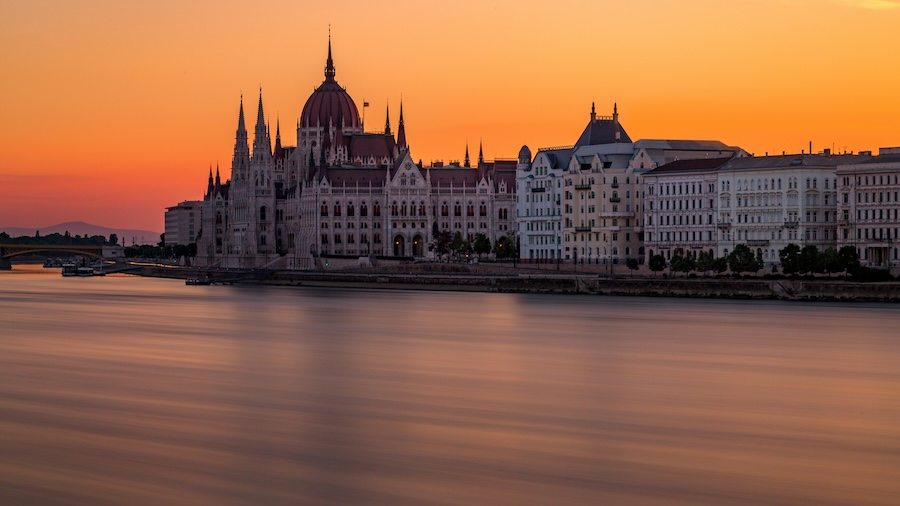
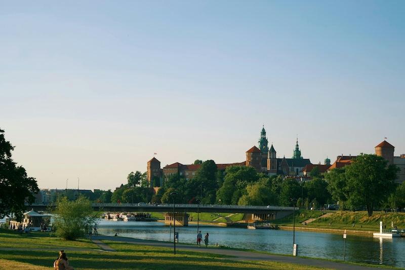
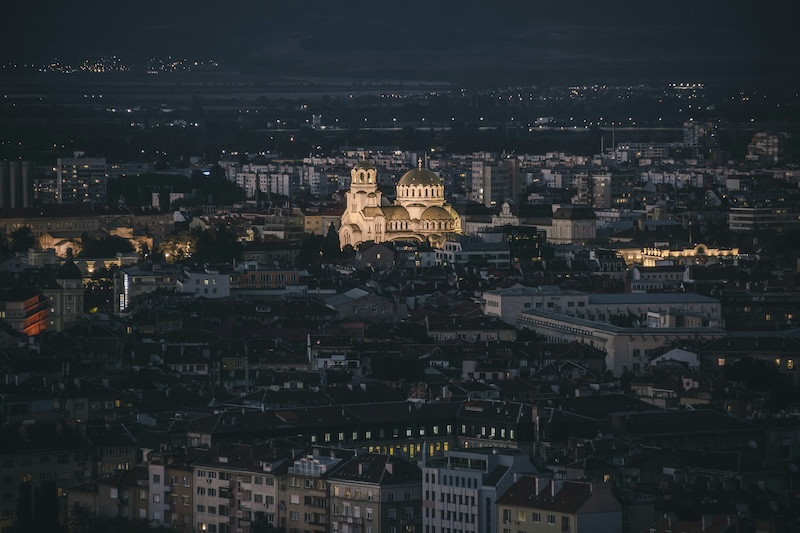
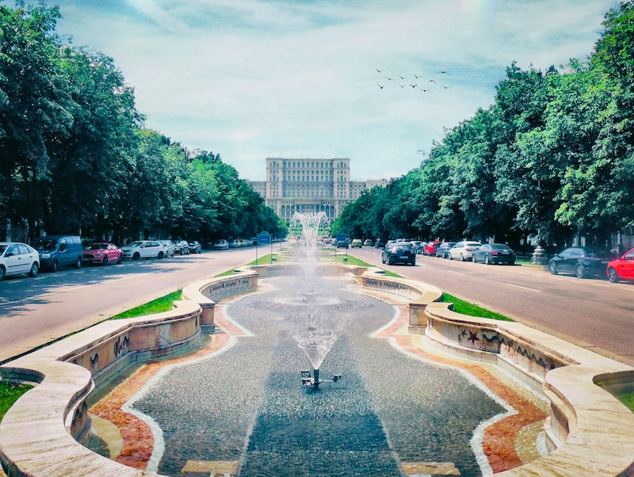

L’Europa offre una vasta gamma di destinazioni affascinanti,
perfette per chi desidera scoprire
posti nuovi senza svuotare il portafoglio.
Se stai cercando una vacanza economica ma non vuoi rinunciare a paesaggi
mozzafiato, cultura, e ottimo cibo, ci sono alcune mete che offrono tutto questo
a prezzi decisamente abbordabili.
Ecco
cinque destinazioni europee che combinano bellezza e convenienza,
ideali per chi viaggia con un budget limitato.
Budapest è una delle capitali più affascinanti dell’Europa centrale. Spesso definita la "Parigi dell'Est", offre un mix perfetto di storia, architettura maestosa e una vivace scena culturale. Attraversata dal Danubio, la città si divide tra Buda, la parte storica e collinare, e Pest, il cuore moderno e commerciale. Qui, puoi passeggiare lungo il Ponte delle Catene, rilassarti nei famosi bagni termali e scoprire il fascino del Castello di Buda.
Budapest è molto conveniente rispetto alle altre capitali europee. Un pasto in un ristorante di fascia media costa intorno ai 10-15 euro a persona, e una pinta di birra locale può essere gustata per circa 2 euro. Anche gli alloggi sono convenienti: puoi trovare ottime strutture a partire da 40 euro a notte.
Costo della vita per un turista:Circa 50-60 euro al giorno, incluso vitto e alloggio.
Cracovia è un’altra destinazione che combina fascino storico ed economia. Con un centro storico dichiarato Patrimonio dell'Umanità dall'UNESCO, la città è famosa per la sua Piazza del Mercato medievale e l'imponente Castello di Wawel. Oltre ai tesori culturali, Cracovia è rinomata anche per la vivace vita notturna e la cucina locale, a base di pierogi e altri piatti tradizionali.
Cracovia è una delle città più economiche in Europa. Puoi gustare un abbondante pasto per meno di 10 euro, e una serata fuori, con drink e cibo, non ti costerà più di 20 euro. L’alloggio, in particolare, offre opzioni molto accessibili, con camere doppie a partire da 30 euro a notte.
Costo della vita per un turista: Circa 40-50 euro al giorno.
Se sogni il Portogallo ma non vuoi spendere una fortuna a Lisbona, Porto è la soluzione perfetta. Questa città affacciata sull’oceano Atlantico è famosa per i suoi vini, le sue pittoresche stradine e l’atmosfera rilassata.
Le case colorate che si affacciano sul fiume Douro offrono uno scenario suggestivo, e passeggiare sul lungofiume della Ribeira è un'esperienza imperdibile.
Porto è più economica rispetto a Lisbona, pur offrendo la stessa qualità in termini di cultura e bellezza paesaggistica. Un pasto in un ristorante locale costa circa 8-12 euro, mentre una visita a una cantina di vino di Porto, con degustazione inclusa, si aggira intorno ai 10 euro. Anche gli alloggi sono abbordabili, con sistemazioni a partire da 45 euro a notte.
Costo della vita per un turista: Circa 55-65 euro al giorno.
"Il Douro si snoda come un serpente dorato tra colline che cantano la vita. Porto è il suo riflesso, e nel suo cuore batte l'eco dell'eternità." Miguel Torga
Sofia, la capitale della Bulgaria, è una delle mete più economiche e sottovalutate d’Europa. Ricca di storia e cultura, offre ai visitatori monumenti antichi, parchi rigogliosi e un panorama artistico vivace. Le attrazioni principali includono la maestosa Cattedrale di Aleksandr Nevskij e il Museo Nazionale di Storia.
In Bulgaria, il costo della vita è significativamente più basso rispetto all’Italia. Un pasto abbondante in un ristorante locale può costare circa 6-8 euro, e una camera d’hotel decente si trova facilmente a partire da 25 euro a notte. Anche il trasporto pubblico è molto economico, con biglietti per il bus e la metro a meno di 1 euro. Costo della vita per un turista: Circa 35-45 euro al giorno.
Bucarest è un mix sorprendente di modernità e tradizione, con il suo passato comunista ancora visibile nei maestosi palazzi e nei grandi viali. La capitale della Romania offre una vita notturna vivace, una scena artistica emergente e una cucina locale gustosa. Tra le attrazioni principali spiccano il gigantesco Palazzo del Parlamento e il bellissimo Parco Herăstrău.
La Romania è una delle destinazioni più economiche in Europa. Un pasto completo in un ristorante costa intorno ai 10-12 euro, e il prezzo medio per una birra è di circa 1,50 euro. L'alloggio è molto conveniente, con hotel di fascia media a partire da 30-35 euro a notte.
Costo della vita per un turista: Circa 40-50 euro al giorno.
Viaggiare in Europa non deve necessariamente essere costoso. Con un po' di pianificazione e scegliendo le giuste destinazioni, è possibile godere di splendide vacanze senza spendere una fortuna. Che si tratti di scoprire le terme di Budapest o di passeggiare per le stradine colorate di Porto, l'Europa ha sempre qualcosa da offrire, anche ai viaggiatori più attenti al budget.